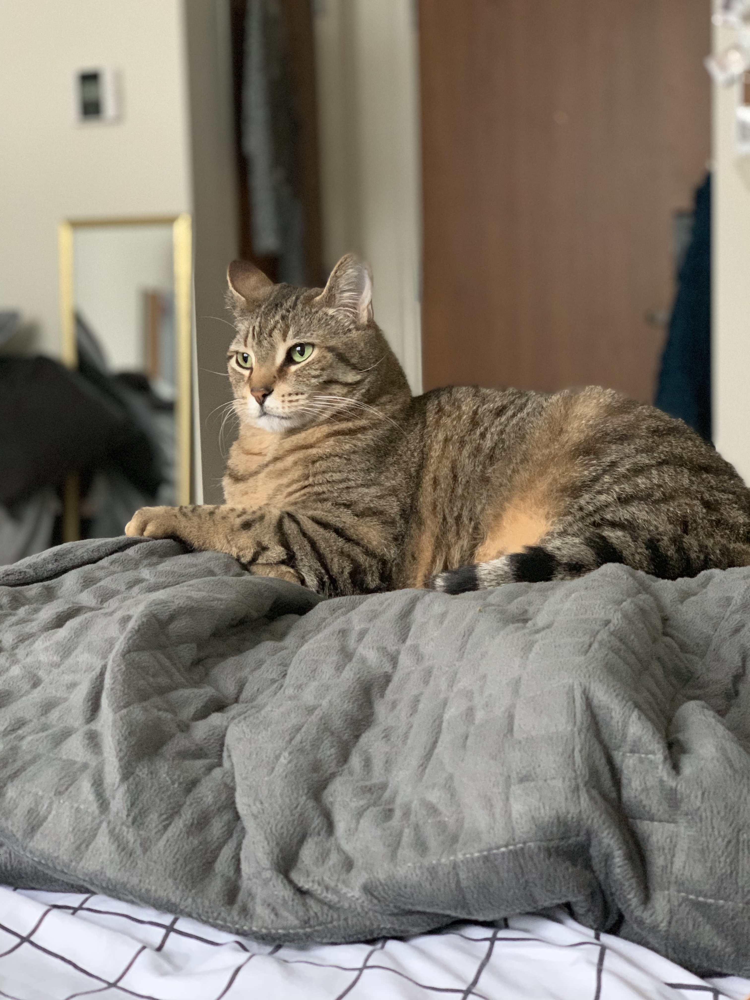
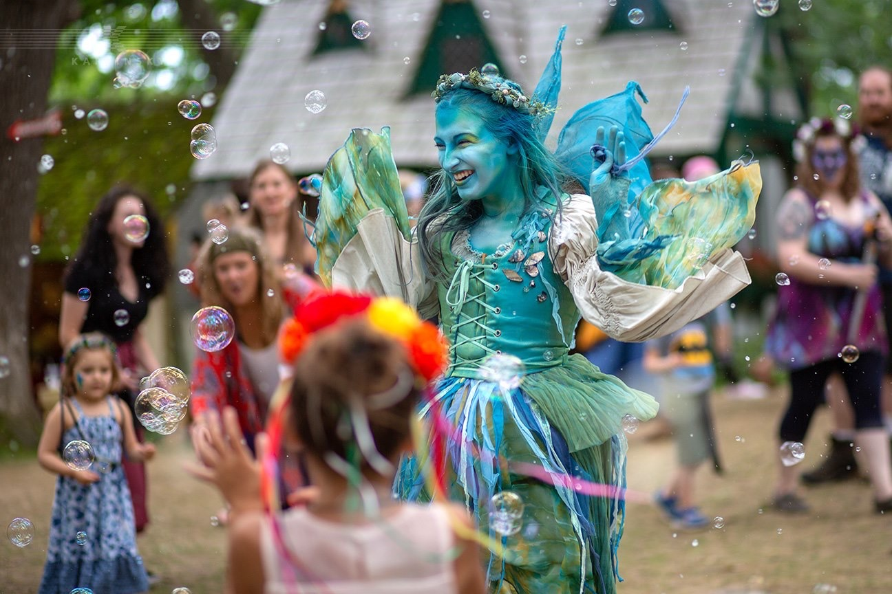

Hi! I'm Andie. I am a sophomore at Northwestern University studying Computer Science and Gender & Sexuality Studies. Thank you for visiting my website!
My areas of interest are in front-end design and video game development. I hope to use my gender studies background to create diverse and accessible games!
I'm from Wichita, KS, Jefferson City, MO and Columbia, MO, and am currently residing in Evanston, IL.
In my free time, I love to dance and play Minecraft or Persona5.
I have a cat named Kitty who may be the best creature on the planet (not that I'm biased or anything).
Over the summers, I work as a Fantastikal at the Bristol Renaissance Faire as the water fairy. It's a wonderful creative outlet and I've learned so much about myself and the world through it!
Over time, I hope to update this website and make it look better, but am currently on a deadline so I'm just trying to get my points.